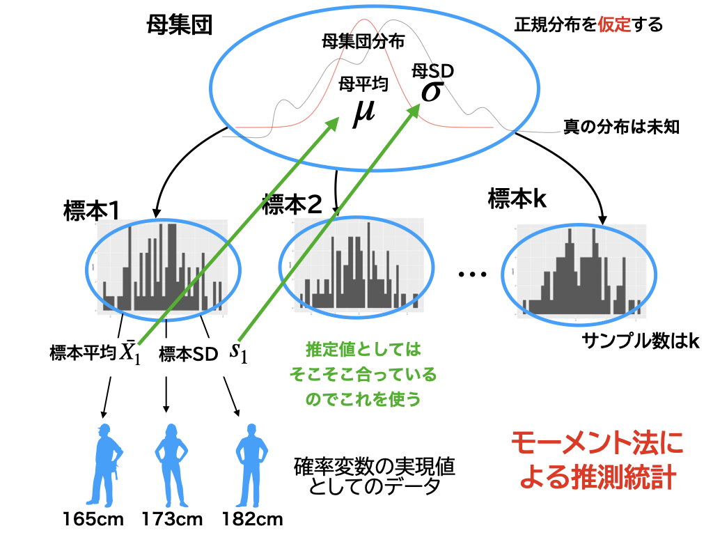
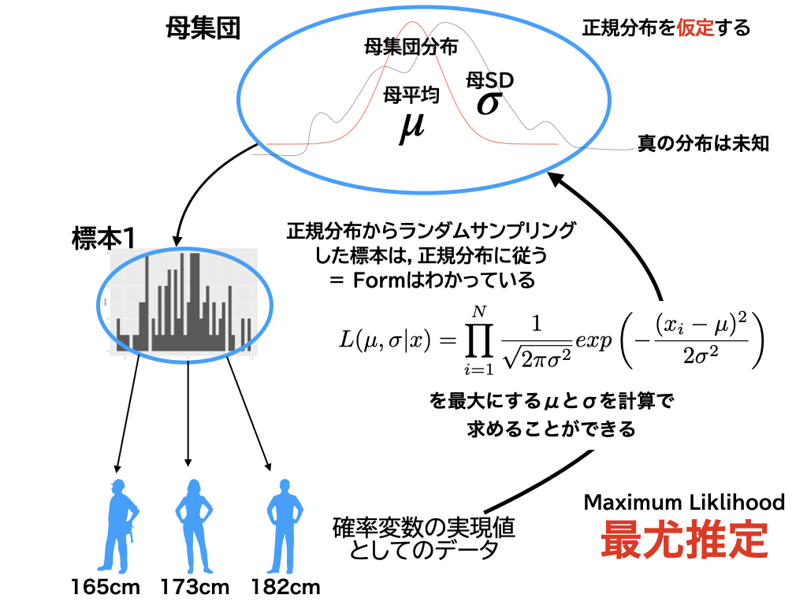
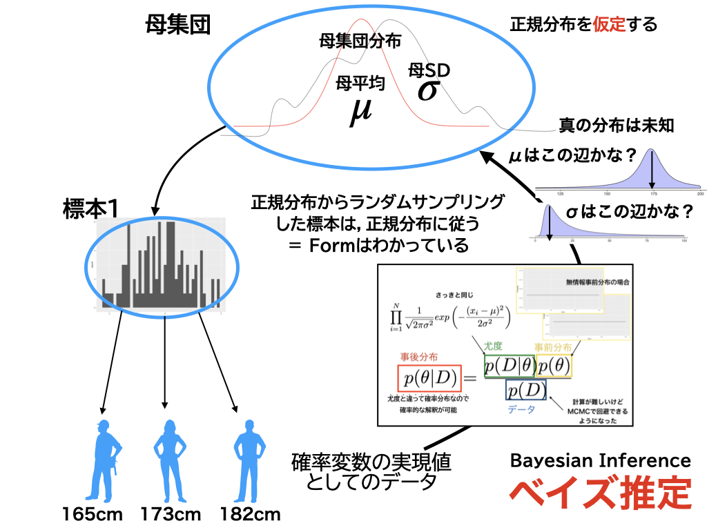
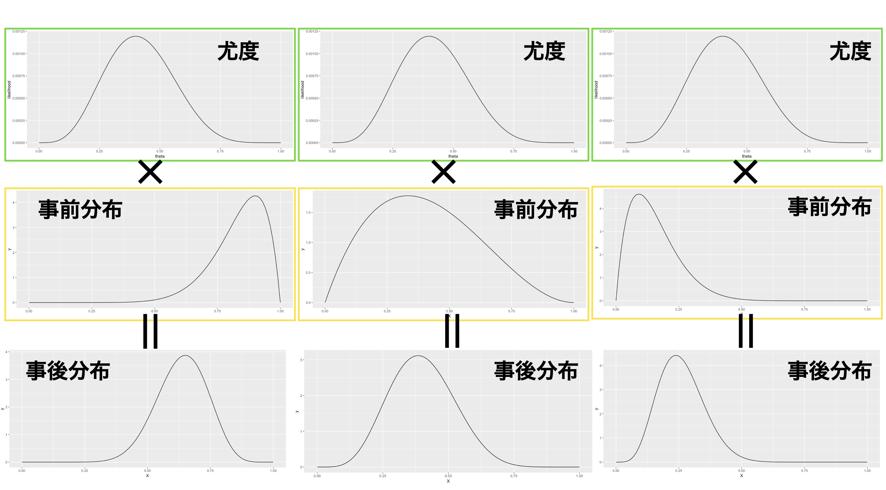
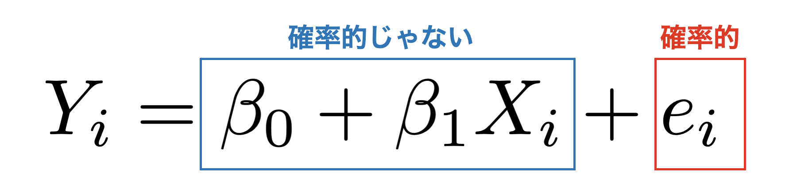
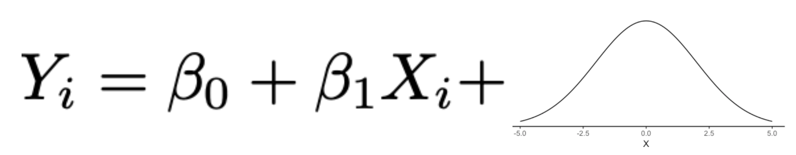
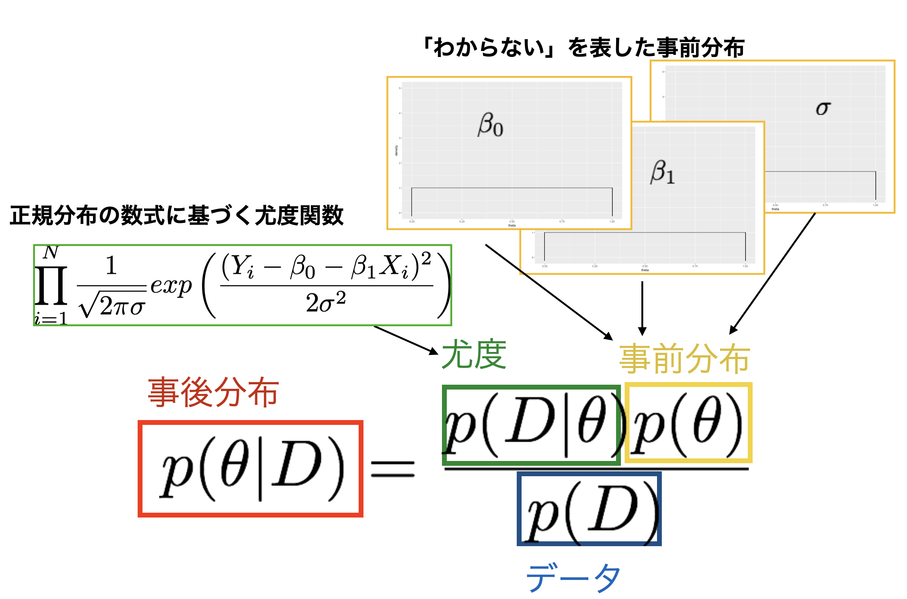
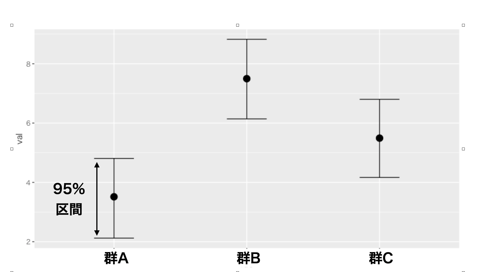

Chapter 19 ベイズ法による回帰分析と平均値差の検定
回帰分析を最尤法で解いたように，ベイズ法で解くことももちろん可能です。本講では線形モデル，要因計画のベイズ推定を考えます。ベイズ法を用いた推定において，事前分布の置き方と結果の解釈に注意しつつ，また最尤法と結果を比較しながらその推定方法を評価していきます。また，心理学では正規分布モデルと要因計画法を組み合わせて，平均因果効果の推定を行う研究が多いのですが，今回はこれもベイズ法をつかって，要因計画における推定すべきパラメータと事後分布の解釈の仕方について考えていきます。
19.1 ベイズ法による母数の推定
19.1.1 3つの推定法
前回はベイズ法によるパラメータの推定方法について説明しました。これでモーメント法，最尤法，ベイズ法という3つの推定方法が出そろったことになります。それぞれの特徴について，今一度確認しておきましょう。
最初に説明したのは，標本平均をつかって母平均の推定値とする，不偏分散をつかって母分散の推定値とする，という，記述統計量に密着した推定法，モーメント法でした。母集団に正規分布を仮定し，標本統計量の分布を使って推定精度を表現するといった方法です。これはそもそも，標本も繰り返せばいずれは1つの値に収束していくという，無限試行の極限として確率を定義する方法の延長線上にある考え方です。

モーメント法による母数の推定
古くから積み重ねられてきた手法であり，また手続きのパターンが決まっているので統計パッケージに採用されやすく，広く普及した方法です。この手法と相性の良かった帰無仮説検定は，心理学においても他の分野においても，長らく使われてきています。ただし手続きがパターン化，悪く言えばマニュアル化し，「これさえやっておけば良いだろう」という使われ方が，マニュアルの誤読や誤解，ルール違反を生み出すことにもなりました164。マニュアル自体もアップデートされていっており，今ではよっぽどのことがない限り検定を使わないでおこう，という主張もあるぐらいです165。皆さんも十分注意深く扱って欲しいと思います。
さてこれに対して，確率分布関数をつかってそれに合うパラメータを探すという，最尤法という考え方もあります(図1.1)。これは分散分析の生みの親，R.A.フィッシャー先生が考えた方法で，データが正規分布する母集団から生成されている，という情報をヒントに，データが与えられた時のパラメータがありそうな場所を探す方法，手元のデータが最も出てきやすいパラメータは何かを考える，という方法でした。

最尤法による母数の推定
これは母集団–標本の考え方からいっても非常に素直な発想です。いわば，確率分布をデータ生成機と考え，このデータを生み出す機械の設定(=パラメータ)はどうなっているんだろう，と考えるというわけです。手元のデータが最も再現されやすいところがその設定値だろうと考える，というわけですね。
この最尤法による推定も長く広く使われています。計算にもそれほど時間がかかるわけでもないですから，多くのデータを扱った推定法としてはスタンダードな手法です。この方法が確率モデルの基本中の基本，王道といってもいいかもしれません。ただ，尤度という考え方の使い方をちょっと注意しないといけないことと166，モデルが複雑に入り組んでくると，昨今の計算機でも答えが出せなくなるような計算機上の限界が見えてきた，というところではあります。
第3の手法はベイズ法です(図1.1)。このベイズ法の原理そのものは18世紀に考えられていたものですが，計算機科学の発展によって実用可能なものになり，一気にその利用が広がっています。

ベイズ法による母数の推定
この方法を使うと，最尤法でうまく答えが出せなかったような複雑なモデルであっても，問題なく答えが出せます。最尤法の場合はたくさんのデータがないと安定した答えが出ない，というようなことがあるのですが，ベイズ法の場合は少ないデータであっても答えを出してくれます。ベイジアン167にとっての限界は，その人の想像力だけだ，という人もいるぐらいです(Lee and Wagenmakers 2013)。
ではどうして少ないデータであっても答えが出せたり，複雑なモデルであっても答えが出せたりするのでしょうか？ 技術的には乱数発生による近似法(MCMC法)が発達したこと，というのが答えになりますが，もう1つの答えは最尤法にはない「答えを出すためのヒント」，事前分布があるからでしょう。
19.1.2 事前分布と尤度の折衷
ベイズ推定の(たった2つの)ステップを思い出してください。
-
不確実性，信念の強さを確率によって数量化する(事前分布priorの設定)
-
観測データを使って事前の情報/信念を更新し，事後の情報/信念(事後分布posterior)にアップデートする
まずは事前分布，それを事後分布に変える。これだけですね。データを得て事後分布にアップデートできれば，その事後分布を事前分布として次の分析に使うことができます。このようにデータ＝情報が得られるたびに，どんどんそれを活用して次に分析を進めていくことができるのが，ベイズ推定の大きな特徴です。
事後分布は，事前分布と尤度の積によって形作られます。図1.4に3つの分析例を示しました。図1.4は縦に見ていって欲しいのですが，最上段の尤度に二段目の事前分布を掛け合わせた結果として，事後分布の形が三段目に得られる，というステップを描いています。ここでいずれもデータと確率分布の関係＝尤度は同じで，前回の例である10問中4回正答がでたというベルヌーイ尤度関数の形になっています。

事前分布と事後分布
二段目の事前分布ですが，一番左は「この人の能力は高そうだ(正答率が高い)」という分析前の見込みを示しています。この時，事後分布は一番左の一番下で，尤度のピーク(0.4)と事前分布のピーク(0.9ぐらい？ )の間ぐらいにピークを持っています。一番右は逆に「この人の能力は低いに違いない」という分析前の見込み，を示しています。この時の事後分布は事前分布に引っ張られて，ずいぶんと低い方向によっています。真ん中の列はその中間で，「ちょっと出来が悪いかもな」，ぐらいの信念を表しています。これも事後分布は，尤度と事前分布の中間ぐらいの形になっています。
私たちは事後分布を見て結果を解釈しますから，事前分布の持ち方1つでこんなにも結果が変わるのでは，何かよくないのではないか，と思ってしまうかもしれません。事前分布が「分析者の恣意的な思い込み」になってしまうもしれないということです168。勝手な事前分布を置いて答えが出たとしても，違う事前分布を置いて全く違う答えが得られるというのでは，科学が恣意的な営みになってしまい，客観的で公平な性質を疑われるかもしれません。そこで事前分布は客観的に決めるとか，無情報事前分布をおくといった方法が良い，ということになります。
しかし逆に言えば，事前分布を持っているというのはこれまでの蓄積を活用できるということでもあります。また，事前分布と尤度が掛け合わされて判断されるのですから，尤度がものすごく尖っている＝たくさんのデータによってある事実が支持されているのであれば，ほんわかした事前分布ぐらいでは事後分布の形が変わることはありません。逆に，事前分布がものすごく尖っている＝とても強烈な事前の信念がある，あるいはこれまでのたくさんの知識の積み重ねがある，という場合は，少しのエビデンスで結果が大きく変わることもありません。その意味で，ベイズの性質はフェアな精神であるとも言えるかもしれません。
19.1.3 おかしな検定結果?
何の前提も置かないことが，果たして良いことなのかどうか，という話もあります(Kruschke 2014)。
たとえばコイントスをして「24回投げて7回は表が出た」話があったとしましょう。これは公平なコインか，というのを帰無仮説検定したいと思います。帰無仮説はコインが表になるか裏になるかに偏りはない，というもの。対立仮説は何らかの偏りがある，というものです。データは半分(12回)を少し下回っていますから，ちょっと怪しいところではありますが，実際に帰無仮説検定をするとこれは帰無仮説を棄却できません169。つまり，7/24という結果は5%よりも生じやすい結果であり，驚くほどのことではないということになります。
しかし，この例がコインではなくて釘だったらどうでしょう？ 釘をトスして，頭の部分が底になって地面の上にピンと立ち上がったら表，そうでなかったら裏だ考えるのです。それで，24施行中7回ピンと立ち上がったとします。なんで？ おかしくない？ 珍しくない？ すごくない？
こんな時でも，帰無仮説検定は棄却できません。24回中7回表が出た，という事実は事実ですから，「おかしくない。こういうことだってある」という結論になります。私たちが「そんな馬鹿な，地面に磁石でもあるんだろ」などと思うのは，放り投げた釘が立ち上がることなんてあり得るはずがない，と強い信念を持っているからです。その信念は物理的な法則に裏付けられたものであり，十分に納得のいくものでしょう。しかしこうした信念すら「事前の思い込みはいけない」といって無視し，「事前に何も思い込みを持ってはいけない，出てきたデータが全てだ」という態度を取るのであれば，偏りがあるとは言えない，という答えを支持するしかありません。これが科学者の定めでしょうか？
帰無仮説検定は，事前の思い込みだけでなく，データがどのように出てきたかというその生成過程やメカニズムにまで言及しません。一方，ベイズ推定をする時は，事前分布と尤度を明記しなければいけません。事前分布は研究者の事前知識を，尤度はデータが出てくるメカニズムを表していますから，これを明確に記録するベイズ統計のほうがより開かれた態度だということもできるでしょう。
19.2 回帰分析の確率モデル
少し話が横道にそれました。3つの推定法のまとめが終わったところで，回帰分析の最尤推定，ベイズ推定の話に進みましょう。
改めて，回帰分析の式を確認しておきます。データの組，\(X_i,Y_i\)があった時に，変数\(X\)をつかって\(Y\)を予測する，線形モデルを当てはめるということを考えるのでした。線形モデルは最も単純な一次式で， \[\hat{Y}_i = b_0 + b_1 X_i\] とし，予測値\(\hat{Y}\)に誤差\(e\)がついて実現値\(Y\)が得られると考えて， \[Y_i= b_0 + b_1 X_i + e_i\] とするのでした。第\[chapter8\]講でやった最小二乗法は，この式をデータに当てはめ，データの中で誤差が一番小さくなるように切片を求める，という方法だったことを思い出してください。あくまでも手元のデータの話しかしていませんでしたが，これに推測統計学のエッセンス，つまり手元のデータは標本に過ぎず，母集団の中でどうか，ということを考えたいと思います。
最尤推定をするためには，この回帰分析の式を確率モデルで表現しなければなりません。このモデルの中に出てくる記号のなかで，確率的に変わるのは何かと言われれば，最もわかりやすいのは誤差\(e\)です。そしてこれは，ガウスの天才的な発想のおかげで正規分布するということがわかっています。数学的な表現をすると， \[e_i \sim Normal(0,\sigma)\] ということになります。ここで誤差の平均が0である，ということを再確認してください。また，平均は0ですが，誤差は一定の幅で散らばって出てきますので，これを標準偏差\(\sigma\)で表しています。
さて，誤差が確率的に求まることがわかりましたが，\(X\)と\(\hat{Y}\)の関係は確率的ではありません。切片や傾きは未知数ですが(母集団での切片と傾きのことになるので\(\beta_0,\beta_1\)と表記しますが)，これがわかりさえすれば\(\hat{Y}_i\)と\(X_i\)の関係は確定的です。つまり，「確率分布に従う」を表す\(\sim\)という記号ではなく，「左辺はこのようになっている」ということを記述するために，\(=\)を使って書くことができます。 \[\hat{Y}_i = \beta_0 + \beta_1 X_i\] これが線形モデル，です。誤差に邪魔されることがない，理想的な予測値\(\hat{Y}\)は，\(X_i\)の一次関数の形で記述できる，ということです。実際のデータ\(Y_i\)は\(\hat{Y}\)に誤差がついて出てくるものですから， \[Y_i = \hat{Y}_i + e_i\] と書くことができます。
さて，これらを組み合わせていきましょう。最後の式から\(\hat{Y}\)を消去する(線形モデルで代入する)と， \[Y_i = \beta_0 + \beta_1 X_i+ e_i\] ということになります。ここで\(\beta_0 + \beta_1 X_i\)のところは確率的に変わるものではなく，定数であることに注意します。

image
誤差\(e_i\)は平均0を中心に確率的に散らばりますが，その前のところは確率的ではありませんので，これを組み合わせた式全体としては，最後に確率的な散らばりがひっついているような形になります。

image
さて，この「確率的でないところ」が確率分布の中に入り込むとしたら，誤差\(e_i\)の平均値を\(\beta_0 + \beta_1 X_i\)だけズラすような作用をすることになります。すなわちデータ全体で， \[Y_i \sim Normal(\beta_0 + \beta_1 X_i , \sigma)\] と書くことができます。これが回帰分析の確率モデルになります。
19.3 回帰分析の最尤推定，ベイズ推定
19.3.1 最尤推定の場合
このようにして確率モデルを書くことができれば，あとはこれにしたがって「データがこの確率モデルから出てくる尤もらしさが最も高くなるのは，どういった\(\beta_0, \beta_1, \sigma\)の時なのか，という推定をすれば良いことになります。
正規分布の式をちゃんと書くと，\(x\)という値が出てくる確率密度は \[p(x) = \frac{1}{\sqrt{2\pi \sigma}}exp\left( \frac{(x-\mu)^2}{2\sigma^2}\right)\] となります。この平均\(\mu\)のところに\(\beta_0 + \beta_1 X_i\)という数式が入ってしまっているのでイメージしづらいところがあるかもしれませんが，あるデータ\(Y_i\)が得られる確率密度は \[p(Y_i) = \frac{1}{\sqrt{2\pi \sigma}}exp\left( \frac{(Y_i-\mu)^2}{2\sigma^2}\right)\] ですから，\(\mu=\hat{Y_i} = \beta_0 + \beta_1 X_i\)を代入して \[p(Y_i) = \frac{1}{\sqrt{2\pi \sigma}}exp\left( \frac{(Y_i-\beta_0 - \beta_1 X_i)^2}{2\sigma^2}\right)\] となります。データは\(i = 1,2,\cdots,n\)とあり，それらが同じ母集団から独立に得られています。手元に同時にこれらのデータが出揃うときの尤度\(L\)は，上記の確率密度(\(p(Y_i)\))を全部掛け合わせたもの170になりますから，総積の記号\(\prod\)を使って書くと \[L(Y_i | \beta_0,\beta_1,\sigma) = \prod_{i=1}^N \frac{1}{\sqrt{2\pi \sigma}}exp\left( \frac{(Y_i-\beta_0 - \beta_1 X_i)^2}{2\sigma^2}\right)\] だということになります。\(L(Y_i | \beta_0,\beta_1,\sigma)\)というのは，\(\beta_0,\beta_1,\sigma\)が決められた時の，という条件付き確率の書き方を借りたLikelihoodという意味です。これは確率(密度)の掛け算になりますから，すごく小さな数字になって計算しにくいので，実際には対数をとって \[\log L(Y_i | \beta_0,\beta_1,\sigma) = \sum_{i=1}^N \log \left[ \frac{1}{\sqrt{2\pi \sigma}}exp\left( \frac{(Y_i-\beta_0 - \beta_1 X_i)^2}{2\sigma^2}\right)\right]\] と計算することになります。というか，実際にはRがこれで計算してくれるわけです。
ちなみにこの最尤推定の結果は，最小二乗法の結果と一致します。
19.3.2 ベイズ推定の場合
ベイズ推定の場合も，尤度は基本的に同じです。違うのはわからないものを確率で表現する，というところにあります。この時の未知数はと言えば，\(\beta_0, \beta_1, \sigma\)の3つですから，これに対して何らかの事前分布(無情報か弱情報か，あるいは先行研究に基づくものでも)を仮定してやると，事後分布が計算できるということになります。

ベイズ推定の方法
データと組み合わせた結果として，\(\beta_0, \beta_1, \sigma\)の事後分布が得られます。最尤推定や最小二乗法の場合と違って，推定値が点で出てくるのではなく，確率分布として出てくることに注意してください。答えは分布そのものですが，その事後確率が最大になるMAP推定値や，平均値であるEAP推定値を使って代表させることができます171。ベイズ法で推定した場合も，最尤推定や最小二乗法による推定結果と大きく変わることはありません。具体的な実践例については，次回の演習でみていくことにします。
19.4 帰無仮説検定とベイズ推定
最後に帰無仮説検定とベイズ推定の関係について解説します。
帰無仮説検定では，効果があったかなかったかという判断を行い，効果の大きさについては効果量という指標を使って報告する，というフォーマットがありました。その説明の中でも平均値差の検定，要因計画は回帰分析と同じ形をしており，線形モデルとして表現できるということを繰り返し説明してきました。
平均値差の検定が線形モデルで表現されるのであれば，その傾きとして示されるパラメータが効果の大きさを表していますから，直接検討できることになります。大きさを直接議論できるようになれば，\(p\)値のような帰無仮説という仮想空間上での確率という，実測値と関係ない値を評価する必要がなく，より素直に効果を表現することがでるので，より初心者にフレンドリーな方法だとも言えるでしょう172。
二群の\(t\)検定でも要因計画でも，一般に線形モデルで表現できますので，Rでの推定にはlm関数を使うことができるのでした。この関数は最尤推定をしていますが，推定法をかえてベイズ推定することもできます。ただし，ベイズ推定を使う場合は結果が確率分布で得られること，また確率についての考え方について異なる解釈ができることに注意が必要です。が，これらを踏まえた上でベイズ流の検定はどのように解釈すれば良いでしょうか。また実際の使い方において，どのような違いがあるでしょうか。
例として，一要因3水準群間デザインをとりあげ，これをベイズ推定したとしましょう。このデザインは第\[chapter21\]講でやったもので，3つの群から推定される母平均が同じかどうかということが問題になるのでした。何にせよ正規分布を仮定していますから，3つの群A,B,Cについての確率モデルは， \[X_{i1} \sim N(\mu_A, \sigma), X_{i2} \sim N(\mu_B, \sigma), X_{i3} \sim N(\mu_C, \sigma)\] となっている，と書くことができます。ここで\(X_{ij}\)は，\(j\)群に属する\(i\)さんのデータ，という意味であり，対応関係がないのでそれぞれ異なる3つの平均値\(\mu_A,\mu_B,\mu_C\)の正規分布から出てきているということをこの式が表しています。分散分析の時は，母分散が均等であるという仮定をおきますから，\(\sigma\)には群わけの添字がありません。
あるいは，どこか一箇所を基準にして \[X_{i1} \sim N(\mu_A, \sigma), X_{i2} \sim N(\mu_A + \delta_1,\sigma),X_{i3} \sim N(\mu_A + \delta_2, \sigma)\] としてもいいでしょう。ここでは\(\mu_A\)を基準として，\(\mu_B = \mu_A + \delta_1, \mu_C = \mu_A + \delta_2\)としたことになります。
あるいは，もっと線形モデル的表現に近づけるならば， \[X_{ij} \sim N(\beta_0 + \beta_j, \sigma)\] と書くことができます。ただしこの場合，\(\sum_j \beta_j = 0\)という条件，つまり群の差は相対的なものであることを明記する必要があります。
ここには3つの式がありますが，何も同じことの別表現で数学的には等価です。ともかく，このような確率モデルにした上で，未知数を推定することを考えます。最後の形式\(X_{ij} \sim N(\beta_0 + \beta_j, \sigma)\)でいうと，未知数は\(\beta_0 , \beta_1, \beta_2, \sigma\)の4つになります173。
これをベイズ推定して，それぞれの群の平均値が得られたとしましょう。結果を図1.6に，各群の平均値の推定結果とその95%区間とともに示しました。この結果から「差があるかどうか」という意思決定をどのようにすれば良いでしょうか。

ベイズ推定による推定結果
意思決定に際して，帰無仮説検定は「帰無仮説と対立仮説というモデル対決」に持ち込んでいき，5%の判定ミスを許容した上で決断するのでした。どうしてこのような形になっているかというと，母平均はどこか一点にあって，われわれはそれを探っているから，究極的には推定が「あっているか間違っているか」の2択にしかならないからです。
ところがベイズ主義的には，母平均はどこにあるのかわかりません。わからないので「この辺りにありそうだ」というのを確率で表現しています。それは知り得ない1点があるのか，それともそもそも確率分布としてあるのかは，哲学的観点が分かれるところです。何にせよあるかないか，という点の勝負ではなく，そもそも分布の勝負になっているので，この95%区間のどこかにあるとだけしておきましょう。図には95%区間を描いていますが，この幅のどこかに存在するとしたら，群Aの上側95%点よりも群Bの下側95%点の方が上にあって，この両群の確信区間は重複する領域がありませんから，この2群ははっきりと差がある，ということができます。一方，群Aと群C，群Bと群Cは区間に重複がありますから，これらの組み合わせは差があるとは言えない，ということになります。
That’s all!これで終わりです。帰無仮説検定の場合は差があったとしても「差がないとは言えないし，そういってしまって間違える可能性が5%」というのが正しい表現でした。まだるっこしいですね。これに対してベイズ推定した結果は，「95%の確信度で差がある」ということができます。ここでいう確信度とは言葉の通りこの主張の強さを表していますから，50%でも99%でも構いませんし，95%よりも99%の方が確信度が高い，つまりより強く主張していることになります。帰無仮説検定の時の\(p\)値についてはこのような判断ができなかったのに比べて，非常に直感的でわかりやすい結果になっています。\(p\)値については，5%と1% を比べて1%のほうが強い，などと言えないのでした。それは\(p\)値がデータや母数についての数値ではなく，1.帰無仮説という仮定を置いた上での，2.現実値の珍しさの度合いを表す，3.判定基準にすぎない，というものだったのでした。これに比べるとベイズ推定して得られた結果は，1.母数の推定された区間，これだけですので，推定値で物事を考えるのにもってこいです。こうなってくると，5%にこだわった考え方が無意味であることが一層はっきりしてきますね。
ベイズ推定にすると良いことは他にもいろいろあります。以下，3点挙げて説明しましょう。
19.4.0.0.1 そのまま大きさの評価ができる
まず1つは，上でも述べたように1bit判断に陥りにくいことがあります。差，つまりどれほどの効果があったのかを直接議論しますから，最初から効果量を，効果の大きさを考えていることになります。帰無仮説検定の問題点として，差が大きかったのか小さかったのかを無視して「とにかく有意である」の一点張りで議論を組み立ててしまう危うさがあったわけですが174，ベイズ推定をもちいた考え方であれば，このような誤解に陥る危険性が未然に防ぐことができているとも言えます175。とくに未知な状態が多い現象について探索的な研究をする場合は，帰無仮説検定が性急に判定結果を出すことで，誤った方向へ仮説や理論が誘導される可能性があるので，この問題は心理学全体にとって重要なポイントだと思われます。
19.4.0.0.2 補正や多重性の問題から解き放たれる
\(t\)検定や分散分析において，分散が均等であるかどうかを検定し，均等であるという仮説が保たれていないのであればWelchの補正をするだとか，球面性の仮定が保たれていないのであればGreenhouse-Geisserの補正をする，といった説明を重ねてきました。これらは最初に考えられたANOVAについて，理論の展開とともに修正パッチをどんどん当てていくようなもので，非常に煩わしい問題でした。
また分散分析の結果は，事後の検定が必要です。差がないとは言えない，じゃあどこにあったんだ，ということで改めて探しにいく必要がありましたし，この時に\(\alpha\)水準のインフレに怯えて様々な補正，修正を考えていかなければなりませんでした。これも非常に煩わしい問題です。
ベイズ推定になれば，この問題が一気に解決します。後者の\(\alpha\)のインフレについては，帰無仮説を設定するわけでも確率を含んだ判断をするわけでもないのですから，そもそも問題になり得ません。次に分散の均質性についての検証ですが，これについては次のようにすれば問題解決です。 \[X_{ij} \sim N(\beta_0 + \beta_j, \sigma_j)\] ここでは分散が\(\sigma_j\)と群\(j\)の添字がついたもの，つまり群ごとに違うものと仮定し，その上で推定すればいいのです。今までの悩みが嘘のようになくなってしまいます！
19.4.0.0.3 帰無仮説を積極的に支持できる
研究の実践上は，関係がないとか効果がないということを示したいというシーンもあるでしょう。しかし帰無仮説検定の枠組みの中では，それはできませんでした。なぜなら帰無仮説を棄却することで決断するのであり，「差がない・効果がない」という仮定の下で計算を進める以上，その仮定が正しいかどうかはその技術で検証することはできないのです。
ベイズ推定の流れでは，無理な帰無仮説をおくのではなく，自然な確率モデルをおくだけですので，傾きが0であるかどうかは確信区間の中に含まれているかどうかで表現できます。確信区間が狭くなれば狭くなるほど，その傾きについての確信度が高まっていくわけですから，はっきりと差がない，というような言い方をできます。
また帰無仮説検定はモデル比較だという話をしてきました。ベイズ推定でも，モデル同士を比較してどちらのモデルがよりデータに支持されているかを指標化して表現できます176。この時，帰無仮説的な傾き0のモデルが，そのほかのモデルに比べてどれぐらいデータに支持されているか，ということができますから，「差がないぞ」ということを積極的に主張できます。
帰無仮説検定は正しく結論づけるために，非常に細かくルール・マニュアルを設計していきますが，そのマニュアルが窮屈すぎるきらいがあることは否めません。ここまでくると，そもそも線形モデルであるというのも気に入らなくなってきませんか。これまでは帰無仮説検定しかツールがなかったので，無理やり正規分布かつ線形の枠組みに研究を押し込めてきたという歴史的経緯がありました。
たとえば比率のデータは正規分布しませんから，分散分析の対象にはなりません。どうしても分散分析したい場合はデータを角変換して補正するとか，所得や反応時間のように正規分布しないものを対数変換して補正する，といったように，データの変換というのが行われてきました。これは分散分析に落とし込むしか検証の方法がなかった，全時代的な風習です。
線形モデルも発展していき，正規分布の仮定を取り払った(GLM)では，二項分布やポアソン分布といったデータの生成過程にあった分布を選択できるようになりました177。いまではデータの変換ではなく，適切な確率関数・尤度関数を選ぶのが基本的なやり方です。
それでも線形の性質は保持されたままです。もっと自由に変数間関係を表現することはできないのか，という考えが湧いてきた人もいるかもしれません。もちろんそれは可能で，線形ではないモデルを自分から考える，の考え方は現代心理学にもどんどん広まっています。そのモデルのパラメータ推定には，ベイズ統計の力が非常に強力で役立つので，とくにと呼ばれています。
19.5 課題
References
-
もう1つは「説明する」です。↩︎
-
なんで\(b\)なんだ\(a\)でもいいじゃないか，と言われたら返す言葉もないのですが，慣例的に\(b\)で係数を表しています。ちなみに今はアルファベットの\(b\)ですが，後期になると\(b\)のギリシア文字\(\beta\)に変わります。ギリシア文字で表現するのは推測統計学的な推定に関わるようになってからです。↩︎
-
親の身長から子供の身長を予測することを考えてみてください。次にその子が親になって，その子がまた親になって・・・という時に，「背の高い親からは背の高い子しかうまれない」というルールであれば，世界はものすごく高身長なひとと低身長な人に二分されてしまいます。そうではないということは，背の高い親から背の低い子が生まれることもあるし，その逆もあるということです。また野球選手などでルーキーのときは成績がいいのに，2年目になったら成績が下がる，というのは2年目のジンクスなどといわれますが，その人の平均的な能力以上のスコアが出た次の年に，平均的な値に帰るために低くなりがちなことは，当然ありえることでもあるのです。こうした効果のことを回帰効果といいます。↩︎
-
細かい計算式については，(kosugi2018のPp.133をみてください?)。↩︎
-
指数についてこれまで習ったことを思い出してください。\(a\neq 0\)のとき，\(a^0=1\)ですし，\(a^{-n}=\frac{1}{a^2}\)と定義するのでした。↩︎
-
こういうの見ると，「あ，ずるい。著者め逃げたな」と思いませんか。私なら思います。そう思われると悔しいので，参考図書として@西内201712をあげておきます。また@長沼201611のP.62–69も参考になります。↩︎
-
\(\pi\)は3.141592...という実数です。円周率ですね。面積になぜ円周率が出てくるのか，それがガウスの凄いところです。↩︎
-
とくに文系には！私も文系出身ですので，最初に習った頃は「うん，わからん！」となりました。↩︎
-
過去形で書いていることからも明らかなように，これら数表が便利だったのは現在ほどコンピュータが個人消費者レベルにまで浸透していない時代のことで，今は次に紹介する計算機を使う方が素早く正確です。↩︎
-
じゃあなんでやらせたんだ，という意見もあるかもしれませんが，たとえば公認心理師認定試験など計算機を持ち込めない環境で，数表から読み取って答えを出さねばならないシーンがあるかもしれない，と思いまして。↩︎
-
標準化したスコアについてはPp.を参照。↩︎
-
Rを使った計算をしました。
1-pnorm(q=1,mean=0,sd=1)=0.15865，あるいは1-pnorm(q=2,mean=0,sd=1)=0.02275013です。↩︎ -
うまくいかなくて質問するときは，どの行でどのようなエラーが出たのか，を伝えてください。エラーの文章をコピーして伝えるようにしてください。よくない質問の仕方は「なんかエラーが出てできませんでした」です。こちらもサポートのしようがありません。↩︎
-
Version Controlはパスしましたが、研究をする上ではこれが重要になってきます。つまり，何月何日にどのような作業をしたか，という記録を全て残しておく必要があるからです。研究ノートやラボノートと言われる記録をつける時に必要です。この記録は不正をしていない証拠にもなります。ここを選ぶとGitやSubversionといったバージョン管理ソフトと連携できます。今はそこまで厳格に管理する必要がないと思うので，説明を省略しますが，ゼミによっては必要になることもあるでしょう。↩︎